Objective 4: Fishery Landings
Data
- Maine DMR landings data
- 2006-2020
County

Species
Top 10 species
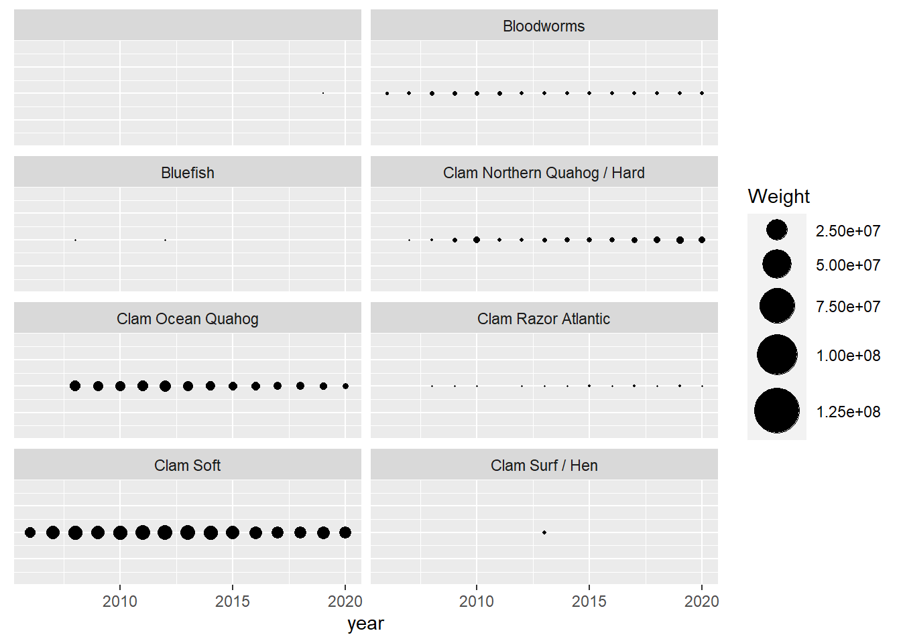
Diveristy metrics
Species richness
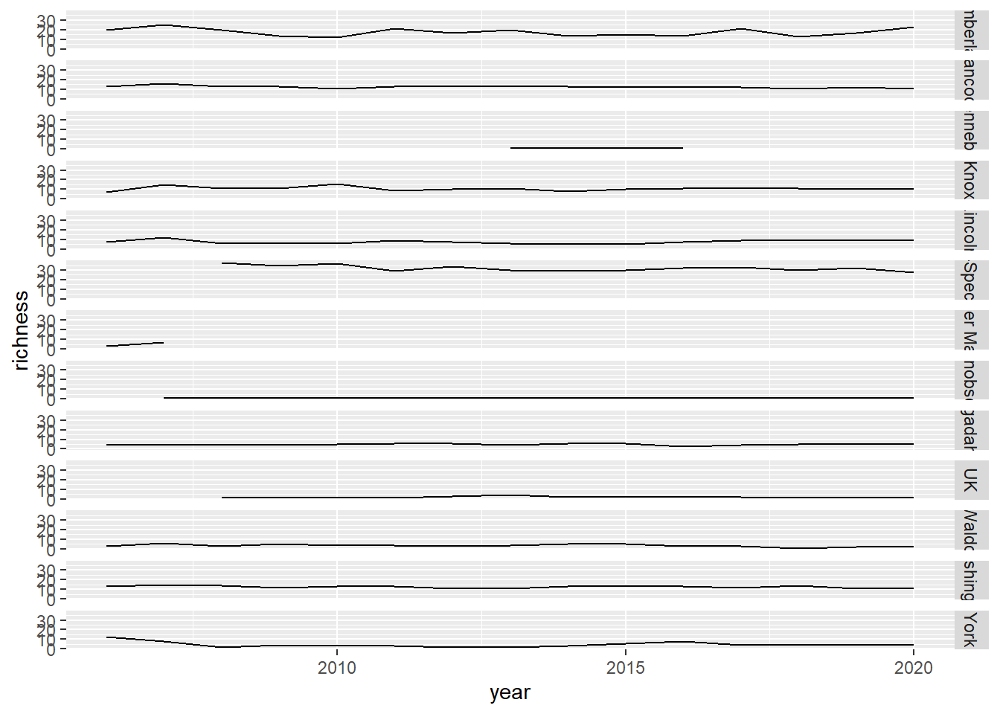
Shannon-Weiner diversity
Based on weight not abundance of species 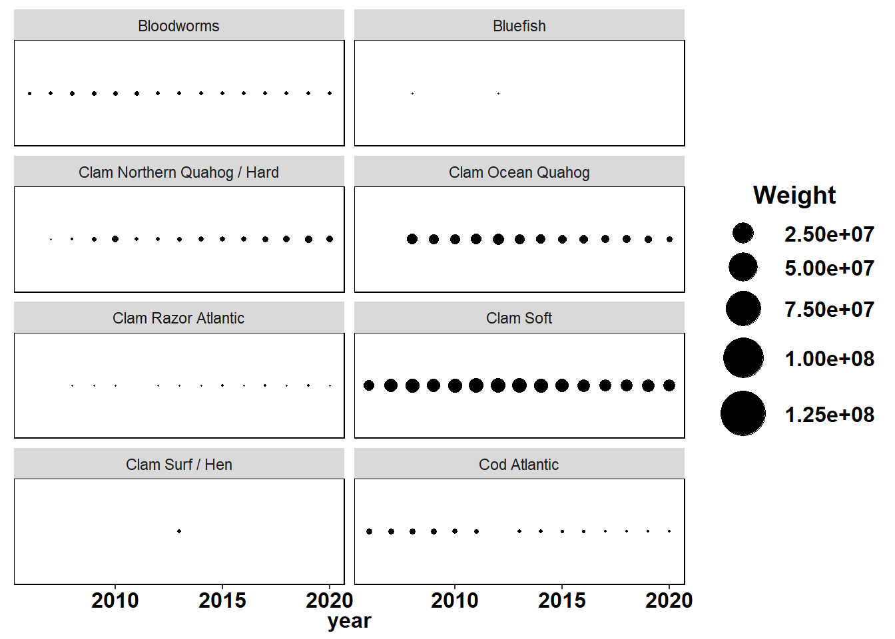
Simpson’s diversity and evenness


Average taxinomic distinctness
## == 42 queries ==============
## v Found: Gadus morhua
## v Found: Cancer irroratus
## v Found: Cancer borealis
## v Found: Brosme brosme
## v Found: Anguilla rostrata
## v Found: Glyptocephalus cynoglossus
## v Found: Pseudopleuronectes americanus
## v Found: Melanogrammus aeglefinus
## v Found: Urophycis tenuis
## v Found: Hippoglossus hippoglossus
## v Found: Clupea harengus
## v Found: Homarus americanus
## v Found: Lophius americanus
## v Found: Hippoglossoides platessoides
## v Found: Pollachius virens
## v Found: Sebastes fasciatus
## v Found: Placopecten magellanicus
## v Found: Pandalus borealis
## v Found: Anarhichas lupus
## v Found: Mytilus edulis
## v Found: Strongylocentrotus droebachiensis
## v Found: Crassostrea virginica
## v Found: Mercenaria mercenaria
## v Found: Limanda ferruginea
## v Found: Merluccius bilinearis
## v Found: Scomber scombrus
## v Found: Cucumaria frondosa
## v Found: Pomatomus saltatrix
## v Found: Brevoortia tyrannus
## v Found: Arctica islandica
## v Found: Ensis directus
## v Found: Squalus acanthias
## v Found: Myxine glutinosa
## v Found: Ostrea edulis
## v Found: Littorina littorea
## v Found: Loligo pealeii
## v Found: Thunnus thynnus
## v Found: Xiphias gladius
## v Found: Buccinum undatum
## v Found: Illex illecebrosus
## v Found: Thunnus obesus
## v Found: Spisula solidissima
## == Results =================
##
## * Total: 42
## * Found: 42
## * Not Found: 0Combo plot
library(reshape2)
library(gridExtra)
all_metrics<-full_join(richness,shannon, by="year")%>%
full_join(simpson)%>%
full_join(d)## Joining, by = "year"
## Joining, by = "year"all_melt<-melt(all_metrics, id="year")
ggplot()+geom_line(data=all_melt, aes(year,value))+facet_grid(rows = vars(variable), scales="free")+theme_bw()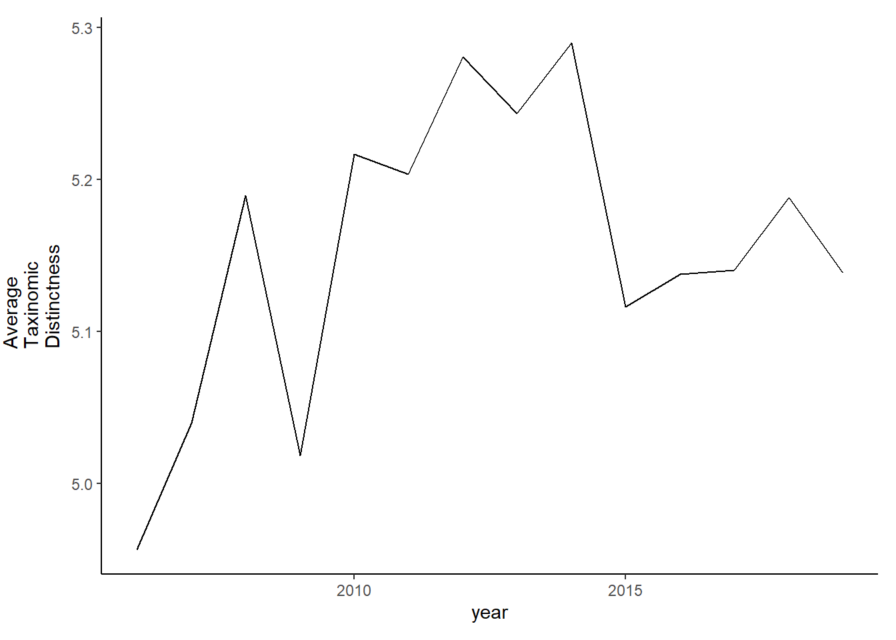
grid.arrange(rich, diversity, evenness,tax.distinct, nrow=4)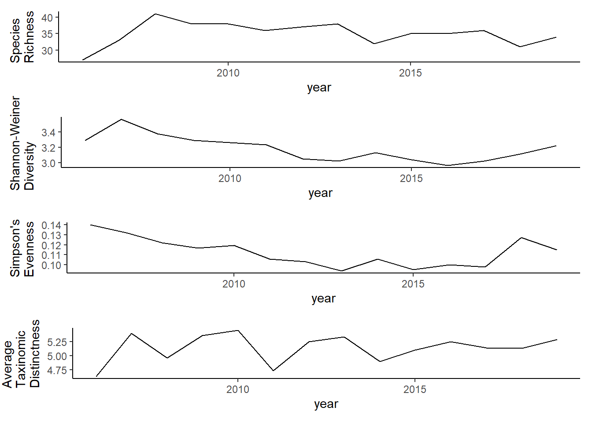
Functional Groups
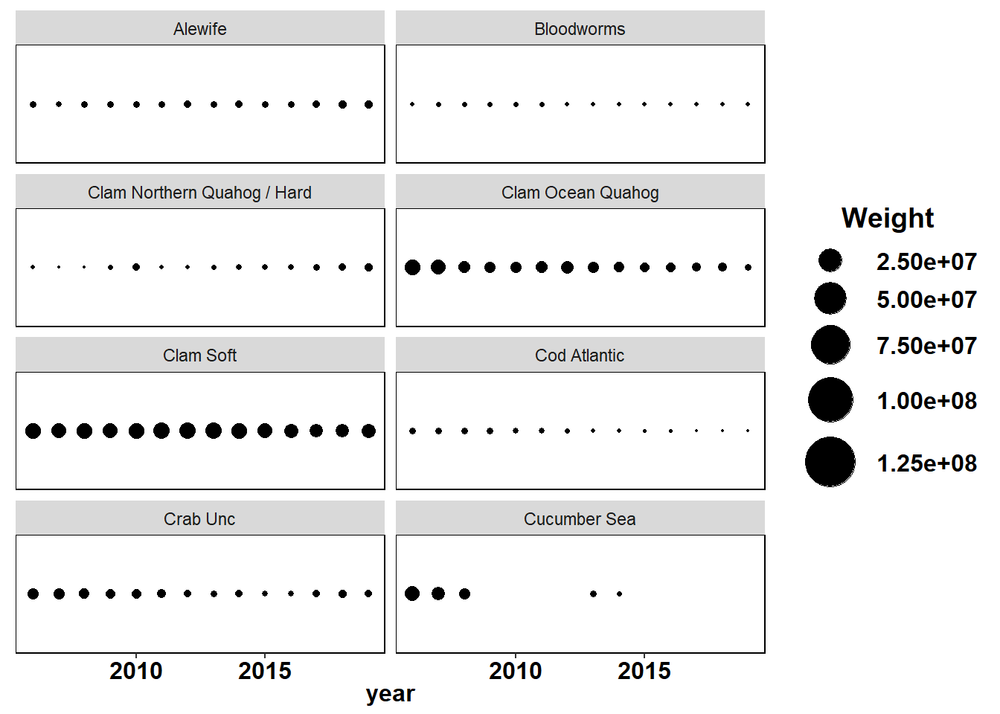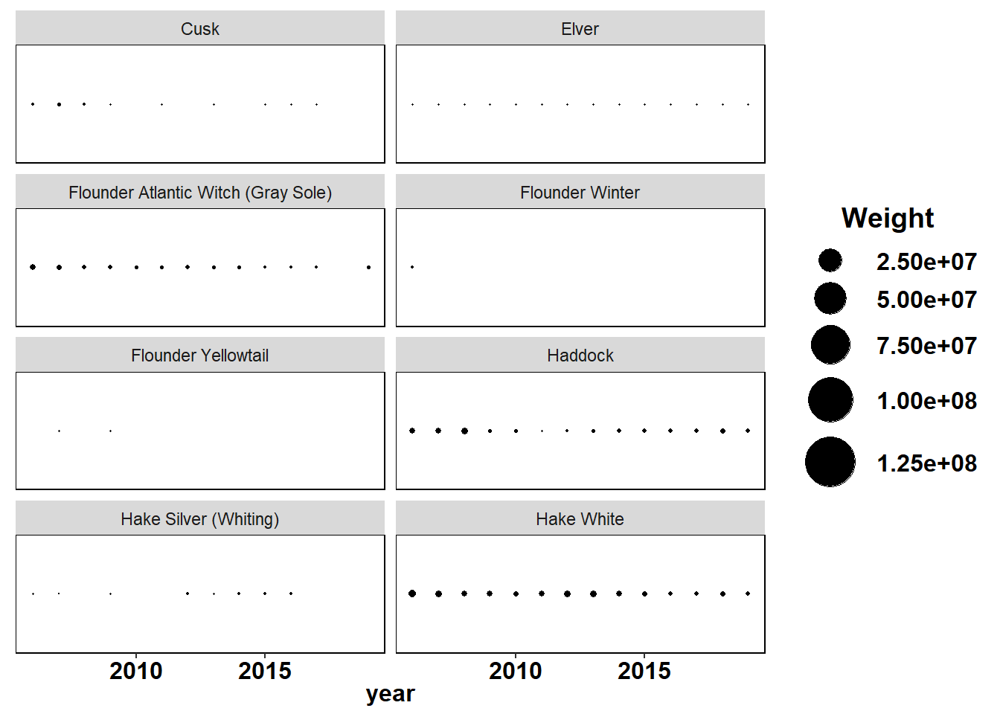
Benthivore
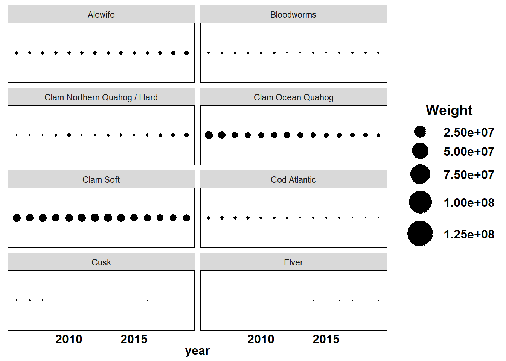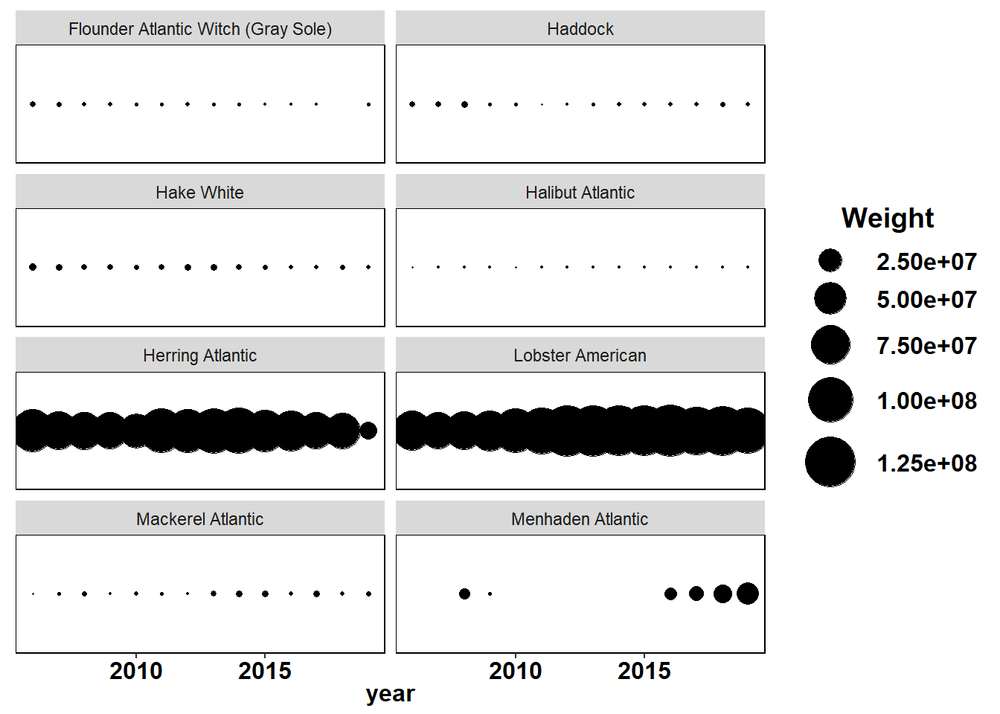
Benthos


Piscivore
 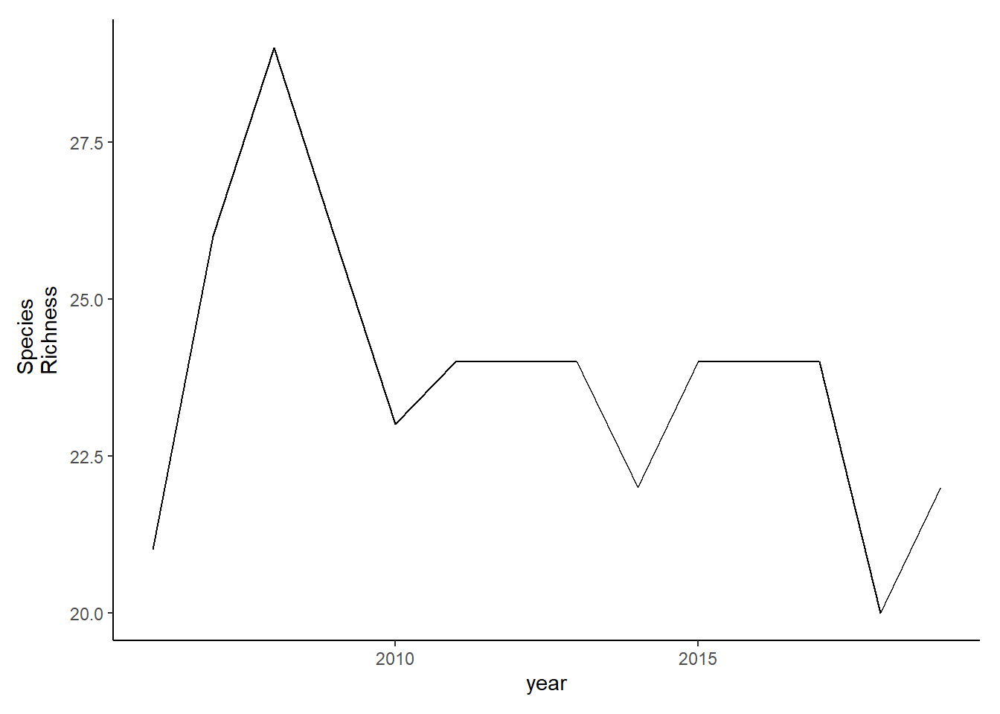
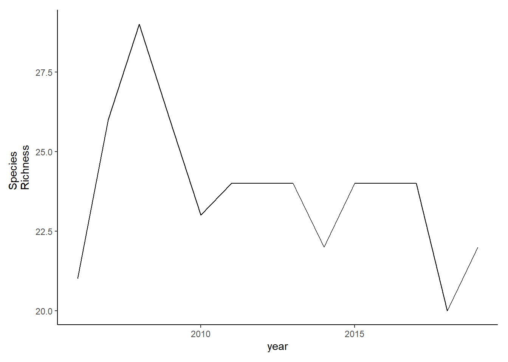
Planktivore
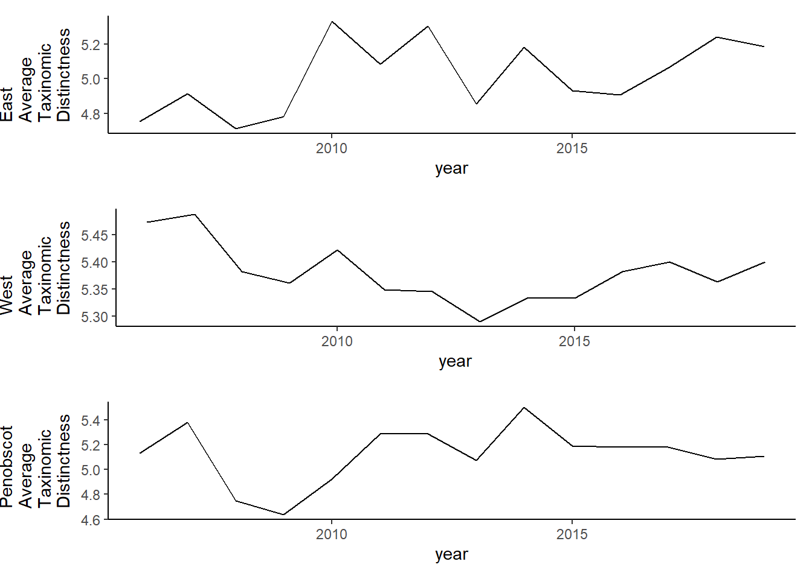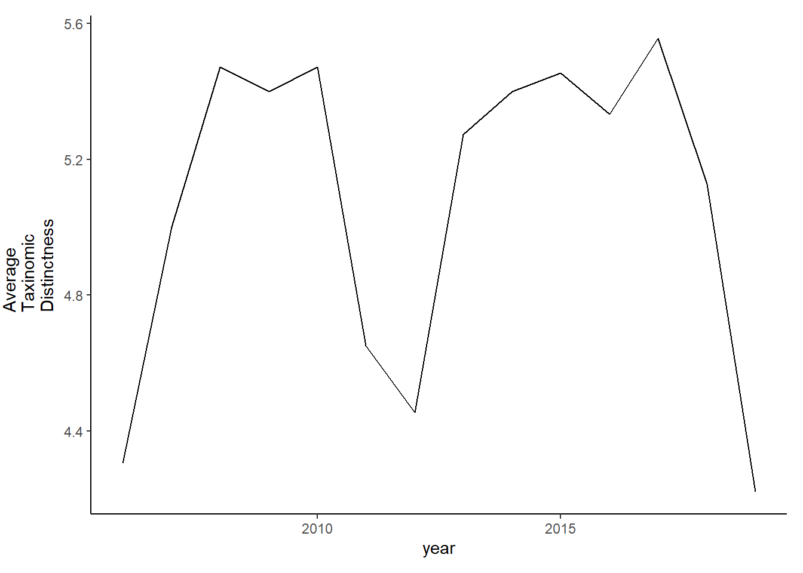
Undefined
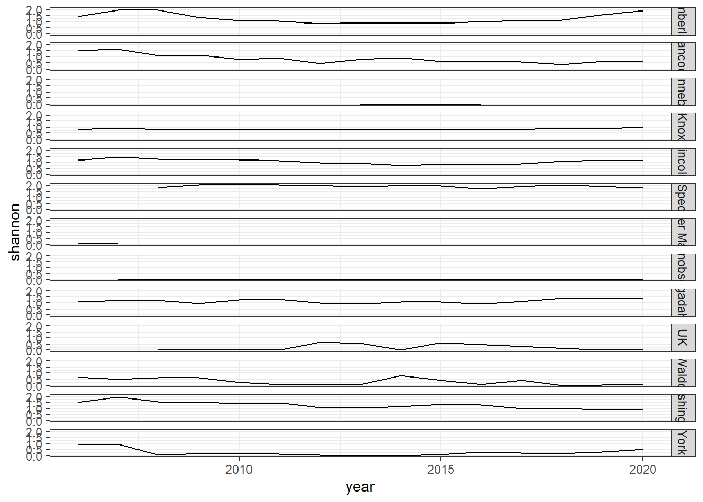